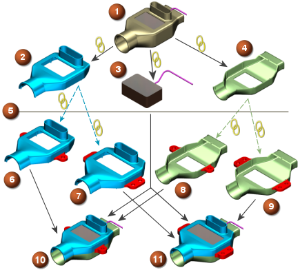

总结
您可以根据种子部件来更改组件，以创建多个产品装配。
在这个示例中，WAVE 链接使用 表示，装配/组件关系使用 表示。
|

|
-
Design Assembly
-
Top seed part
-
Inside part
-
Bottom seed part
-
Controlled update
-
Top part version 1
-
Top part version 2
-
Bottom part version 1
-
Bottom part version 2
-
Production assembly version 1
-
Production assembly version 2
|